ARE SUFFERING
WITHOUT CONTACT
WITHOUT A VOICE
WITHOUT CONTROL
MORE?
0

![DR. STUART GRASSIAN FOUND THAT SOLITARY CONFINEMENT INDUCES A PSYCHIATRIC DISORDER CHARACTERIZED BY HYPERSENSITIVITY TO EXTERNAL STIMULI, HALLUCINATIONS, PANIC ATTACKS, COGNITIVE DEFICITS, OBSESSIVE THINKING, PARANOIA, AND A LITANY OF OTHER PHYSICAL AND PSYCHOLOGICAL PROBLEMS. PSYCHOLOGICAL ASSESSMENTS OF PELICAN BAY’S SHU PRISONERS INDICATED HIGH RATES OF ANXIETY, NERVOUSNESS, OBSESSIVE RUMINATIONS, ANGER, VIOLENT FANTASIES, NIGHTMARES, SLEEP DIFFICULTIES, DIZZINESS, PERSPIRING HANDS, AND HEART PALPITATIONS.3](images/u2637-13.png)

![“CONFINED” IS AN INTERFACE DESIGNED AND EXECUTED BY ZIA FRANK AS A PARTIAL CREDIT FULFILLMENT OF GDES 401 SENIOR DESIGN STUDIO -- UNIVERSITY OF THE ARTS, PHILADELPHIA PA -- UNDER THE GUIDANCE OF JAN ALMQUIST.
FURTHER INQUIRES CAN BE DIRECTED TO ZJAMISONFRANK@UARTS.EDU
SPECIAL THANKS TO BUDDY HARRIS, MATHEW SULLIVAN, AND ELAINE JOHANSON
1. TIME LINE: SOLITARY CONFINEMENT IN U.S. PRISONS, LAURA SULLIVAN, NPR.COM, ACCESSED APRIL 2015
2. FAQ, SAL RODRIGUEZ, SOLITARY WATCH.COM, ACCESSED APRIL 2015
3. "PAWNS IN A FAILED EXPERIMENT" TESTIMONY OF DR CRAIG HANEY, SAL RODRIGUEZ, SOLITARYWATCH.COM ACCESSED APRIL 2015 MUSIC PROVIDED BY JOHHNY CASH, GOD’S GONNA CUT YOU DOWN, THE APOLLO PROGRAMME WAS A HOAX, REFUSED, AND SELBYVILLE, UNTIL DARK
IMAGE AND VIDEO CREDITS, CANON 5D RAW TEST BY LUUK DE KOK, HOURS IN JUVENILE SOLITARY CONFINEMENT BY RICHARD ROSS,
PREVENTION OF INJURY BY KYLE BROOM, PRISON ILLUSION EXPERIMENTAL SHORT BY JULIUS HORSTHUIS](images/u2643-24.png)